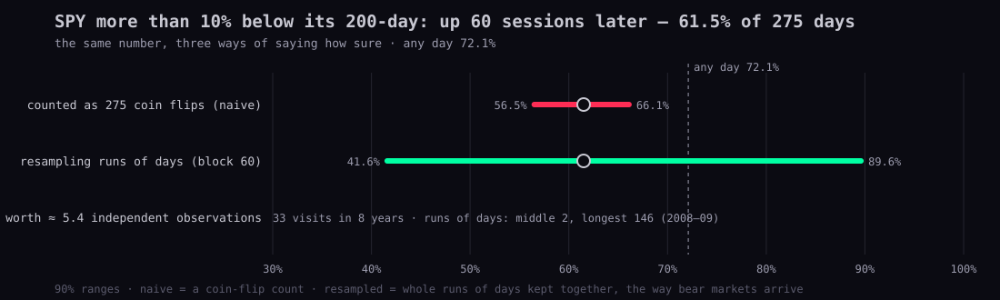
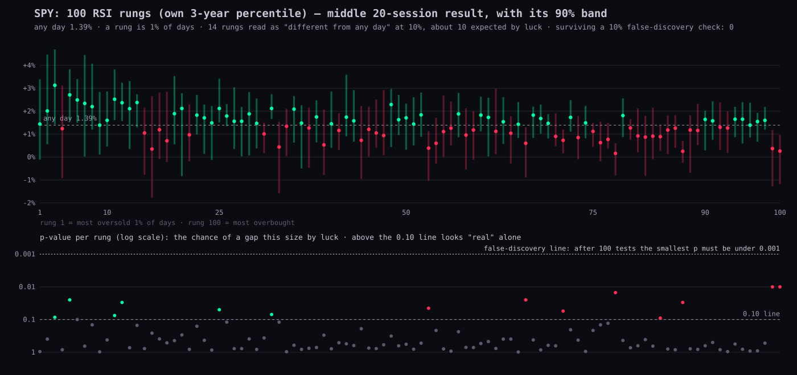
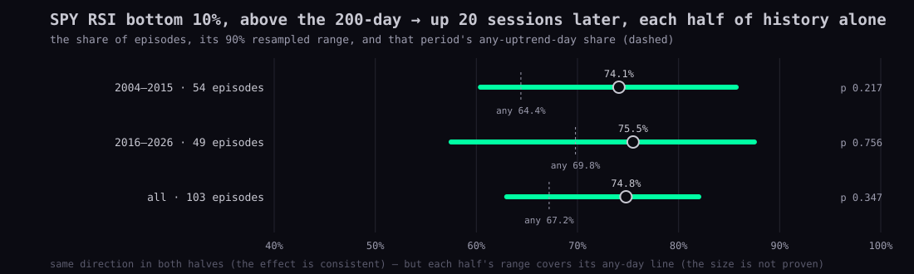

plan.json. Nothing was deployed; no key, database or price table was touched.arch (block bootstrap, SPA/Reality Check, StepM, MCS), statsmodels (false-discovery correction, Newey–West errors, Markov regimes), alphalens-reloaded (the leaders as a factor), ruptures (change points). Nothing else is needed now; RRG is reimplemented in about 50 lines because no maintained library exists.Ten rules in plain words, each with the one-line reason. The technical version is section 7.
Every finding carries three numbers and one word. How many: independent episodes (and years), never days. How sure: the 90% range from resampled runs of days, against the any-day line. How big: the middle shift against any day, in the instrument's usual days. And the word: luck-proof (the range clears the any-day line after the test count is corrected, in both halves of history), leaning (same direction in both halves, range still touches the line), or a list (fewer than 20 episodes: the cases are shown one by one and no rate is claimed).
On a phone, swipe a chart sideways to see all of it.
Three numbers we already published, re-read the honest way. Code: research/statistics/method/ (a 40-line stationary bootstrap, effective sample size, Benjamini–Hochberg, walk-forward); numbers in method-demo.json; pinned tests in tests/statistician-method.test.mjs. Read-only from the cached daily bars.

S9 reported that on days when SPY sat more than 10% below its 200-day, it was up 60 sessions later 61.5% of the time (169 of 275 days; any day 72.1%). Counted as 275 coin flips, the 90% range is 56.5–66.1%, which reads as "clearly worse than any day". But those days come in runs (middle run 2 sessions; the 2008–09 run was 146), in 33 visits over 8 years (2008, 2011, 2016, 2018, 2019, 2020, 2022, 2025). Resampling whole runs of days (mean block 60 sessions, the forward horizon) gives 41.6–89.6%, and the chance of a gap this size from any day by luck is 0.575. The 275 days are worth about 5.4 independent observations. Verdict: a list, not a rate. The fact Alan asked for needs the pooled study (N5).

Alan asked for every percentile 1 to 100 instead of a forced 10%. That is right, and it brings the second half of the rule: a hundred rungs are a hundred tests. On SPY (own prior-3-year percentile, the S8 rule; median 20-session result against any day's 1.39%): 14 rungs have a resampled p-value under 0.10 (rungs 3, 5, 11, 12, 25, 32, 53, 66, 71, 78, 84, 87, 99, 100); luck alone gives about 10. With Benjamini–Hochberg at a 10% false-discovery rate, 0 survive. The rsi-ladder lane saw the same thing from the other side (207 above and 200 below out of 2,600 pooled rungs, "about equally on both sides"). The finding is the slope: the low rungs lean up and the top rungs lean down, which is a trend test across rungs, not a claim about any one rung. That is how the ladder should be read on the stats tab.

S8's headline: SPY RSI in its bottom 10% while above the 200-day was up 20 sessions later 74.8% of 103 episodes (any uptrend day 67.2%). Re-measured here to the same number. Split: 2004–2015 74.1% of 54 (any uptrend day 64.4%; resampled 90% range 60.4–85.7%, p 0.217); 2016–2026 75.5% of 49 (69.8%; 57.5–87.5%, p 0.756). The direction repeats, the size is not proven. Verdict: leaning. The stats tab card that calls it "yes, on the record so far" should carry that word and both halves.
Each repository or documentation page was read today (GitHub, PyPI, readthedocs). The Kimi breadth survey (staging/kimi-repos-20260928/REPOS.md, 33 tools) was used as the list; two of its claims are corrected below. The split: Node stays the study language (the bars, the pivot rule, the cloud lines and the pages are already there and match the Station exactly); Python is the checking language, in a research virtual environment on this Mac for cached data, or in a Fly one-off when a key is needed. A Node study exports its per-episode table as JSON; the Python check reads it and returns the honest ranges and the test-count correction.
| Tool | Adopt? | For | How | Notes from reading it |
|---|---|---|---|---|
| arch | yes | StationaryBootstrap / CircularBlockBootstrap, optimal_block_length, SPA (Hansen) and Reality Check, StepM, MCS | Python research venv; fed with loss arrays exported by Node studies | The Kimi survey said SPA is not pre-built; it is (arch.bootstrap.SPA, StepM, MCS) |
| statsmodels | yes | multipletests (fdr_bh), OLS with HAC (Newey-West), MarkovRegression regimes, QuantReg | Python research venv | 0.15.0, Aug 2026, BSD-3 |
| alphalens-reloaded | yes, for the leaders study | factor tear sheets: quantile forward returns, information coefficient, turnover of a monthly ranking | Python; input = factor value per (date, ticker) + prices | Apache-2.0, maintained by Stefan Jansen |
| quantstats | later | tear sheet of any rule turned into a return series | Python | only once there is a strategy to report; period-level win rate, not trade-level |
| empyrical-reloaded / pyfolio-reloaded | no | covered by quantstats | ||
| vectorbt (OSS) | later, pinned | parameter sweeps whose results feed SPA | Python, pinned numba | Apache-2.0 with Commons Clause; the free edition is frozen |
| ruptures | yes | change points in relative-strength ratios, breadth and VIX term structure (PELT, penalty chosen on the first half) | Python | BSD-2, offline only |
| hmmlearn | try after statsmodels | 2-3 state regimes on SPY returns | Python | limited-maintenance mode; label switching; prefer MarkovRegression which gives transition matrix and expected duration |
| PyPortfolioOpt / Riskfolio-Lib / skfolio | not now | portfolio construction | Allocation presents options, not portfolios (24 Sep); borrow skfolio's combinatorial purged CV idea for walk-forward | |
| pandas-ta | no | 0.4.71b0 beta (Sep 2025), one maintainer; our Node RSI/EMA/SMA already match the Station | ||
| TA-Lib | as a reference only | one-time fixture that pins our Node RSI(14), EMA13/21, SMA50/200 against TA-Lib values | Python, brew ta-lib | BSD-2 |
| RRG (rrg-kit, RRG-Lite, RRGPy, tuhuynh27 gist) | reimplement in Node | JdK RS-Ratio / RS-Momentum approximation: RS = 100·price/benchmark, z-score over a window +100, momentum = ROC of the ratio z-scored | ~50 lines in research/statistics | no maintained library; JdK's exact constants are proprietary, numbers will not match StockCharts tick for tick |
| seasonality tools | no library | month / turn-of-month / expiry-week dummies with HAC errors and FDR across the 12 months | statsmodels | ranaroussi/seasonality draws averages only, no uncertainty |
| OpenBB | no | AGPL data layer; we already hold the data |
Corrections to the Kimi survey. (1) It says the SPA / Reality Check "is not pre-built" in arch; the multiple-comparison module ships SPA (Hansen 2005, with White's Reality Check as the "upper" p-value), StepM and MCS, taking a benchmark loss series and a matrix of model losses with a block size. (2) It dates pandas-ta's last release to ~2023; PyPI shows 0.4.71b0 from 14 Sep 2025, a beta with one maintainer requiring Python 3.12, which is a reason not to depend on it rather than a sign of health. Its ranking (arch, statsmodels first) agrees with this page.
The RRG formula we will use (the public approximation every open implementation shares; JdK's constants are proprietary): RS = 100 × price ÷ benchmark; RS-Ratio = 100 + (RS − mean over the window) ÷ standard deviation over the window; RS-Momentum = the same z-score applied to the rate of change of RS-Ratio. Window and momentum period are parameters, so N1 reports every window from 4 to 26 weeks rather than picking one.
Setup, when the coordinator says go (no install was made today): python3 -m venv research/python/.venv && research/python/.venv/bin/pip install arch statsmodels alphalens-reloaded ruptures, with a requirements.txt pinned to the versions that install. TA-Lib only for the one-time fixture that pins our Node RSI/EMA/SMA against reference values.
"Sound" is what to keep. "Weak" names the rule broken. "Fix" is concrete and cheap unless it says otherwise.
| Study | Sound | Weak | Fix |
|---|---|---|---|
| S6 run-up into earnings (25 Sep) | large pooled sample; corrected report timing in S8 | fixed 20-session window; today's 313 names measured backwards (survivors); unweighted by size or era | R1 universe from the day files; window = pivot to report; cap-weight by era |
| S7 entry confluence (27 Sep) | discover/check split; every trade defined | 178 rules, best 64.3% reported without a test-count correction; 1% touch bands and 20-session window are cut-offs | SPA with window-start entry as the benchmark; touch band as a percentile of usual days |
| S7b between reports (27 Sep) | corrected itself: shuffled-price control killed the post-report-drop claim; lift table is descriptive | 254 rules, 10 pass both halves at 65%: at a 5% level 254 rules give ~13 false passes per half, so 10 is what luck looks like | SPA / StepM over the 254; report the count that survives; hindsight lows only as description |
| S8 ladder (27 Sep) | month-clustered bootstrap, 200-draw shuffle, episodes not days, recency columns, no lookahead percentiles | about 130 fund tests (11 rungs x 4 states x 3 horizons) read against a 1-in-20 line: 6-7 cross it by luck; 20-session horizon fixed; 313 survivors pooled unweighted | FDR over the whole ladder (this page shows the result: 0 rungs survive on SPY); add to-next-swing horizon; R1 universe |
| S9 research program (27 Sep) | pivot rule with sensitivity rows; confirmation dates; bad prints cleaned and listed; questions ranked | depth buckets are cut-offs; next-leg-only outcome (fixed by rsi-ladder); 200-day band: 275 days = ~5 independent, ranges not shown; leader definition proposed but not tested | continuous depth; survival curves; block bootstrap and effective n on the band table; N4 and N5 below |
| rsi-full-history (28 Sep, in flight) | full histories, no-hindsight percentiles, 90% ranges, 'may be luck' wording | 17 instruments x 4 horizons = 68 ranges uncorrected; bullish divergence n=11 on SPY is a list; bottom-10% zone still a cut-off (the ladder fixes it) | FDR over the 68; state 'a list' when n<20 episodes |
| rsi-ladder (28 Sep, in flight) | rungs 1..100; honest note that 207/200 pooled hits mean narrow bands; time-to-new-high curves | '1335 of 1336 made a new high' is a statement about indexes that went up; the wait is the finding; open pullbacks must be censored, not counted as failures or dropped | Kaplan-Meier curves with censoring; FDR over rungs (0 survive on SPY at 20 sessions, this page) |
| market-regime (28 Sep, in flight) | six questions with 90% ranges; counts separate years behind one-year windows; measures Alan's thesis instead of assuming it | equal-weight extremes n=3-9 per pair (a list); 12 months + expiry weeks + Fed days = many tests; block length for 63-session overlapping returns not stated | stationary bootstrap with block >= horizon; FDR across months; pool the 17 pairs into one estimate with a pair effect |
| bottoms (28 Sep, in flight) | expanding own-history percentiles (no window); stress orientation; false-alarm counts are in the design | not yet published; 'turned first' by pivots depends on the 10-bar rule for both series; lead-time offsets need a shuffle control (as S7b did) | publish hit rate AND false-alarm rate at every threshold (N3); shuffle the condition series in blocks as the control |
| leaders (28 Sep, in flight) | 2020->2026 from N-PORT holdings is point-in-time; share classes merged; quarters chained exactly | 2004-2019 'estimated' from 113 survivors' caps (82 companies measured in 2004): concentration is understated and the top-20 is a survivor list | N4: point-in-time universe from the Massive day files + FMP historical constituents; mark the estimated years as such on the page |
| stats-tab (28 Sep, in flight) | one card per question, 'how sure' line, review pending state | a card can carry a number that fails the standard (74.8% is 'leaning', not 'luck-proof') | each card carries the status word and the FDR result; only luck-proof or leaning cards get a chart; lists stay text |
| scout (28 Sep, design) | not a study, but its nightly whole-market file from the R2 Massive day files IS the survivorship-free universe R1 needs | history job not yet run for 2003->2026 | one Fly one-off builds the monthly point-in-time universe (ticker, $-volume, close, 6/12-month return) from the day files |
The pattern across all of them. Three faults recur: days counted as independent (R3/R4), cut-offs and rules tested without counting the tests (R2/R5), and a universe of today's names (R1). The in-flight lanes have already moved on two fronts — expanding own-history percentiles with no window (bottoms), and rungs 1..100 with time-to-new-high curves (rsi-ladder) — and their honesty about ranges is good. What none of them has yet is the test-count correction and the walk-forward split shown side by side, and that is the smallest change with the biggest effect on what Alan reads.
Ordered by value to how Alan trades. Each says what result would change a decision, so a study with no such result is not run.
On the Geiger bow tie. The cohort-compare view shifts when the Geiger readings of one cohort spread apart from another's. To say what that meant historically needs a daily history of the Geiger per ticker, which is not captured today (an additive capture table, the same pattern as breadth). Until it exists, N1 uses the closest thing we can compute from bars: the cross-sectional dispersion of 3-month relative strength across sectors and cohorts, and what followed when it widened or narrowed.
On routing. The 24 Sep correction stands: Urth lanes do not delegate to Kimi until Alan approves the rollout, so the "lane" column names Urth (Node) or a local Python check, with the coordinator running any Fly one-off. Nothing here needs a key on this Mac.
econ-tape, indicator-lab-methods) that fail on the untouched base commit as well: prototypes/indicator-lab/ is byte-identical to origin/hub/release-20260923 on this branch. The six new toolbox tests pass.Decisions for Alan (recommendation in bold):
arch: StationaryBootstrap(block_size, x).conf_int(func, reps, method="percentile") with optimal_block_length.statsmodels.stats.multitest.multipletests(p, method="fdr_bh"); arch.bootstrap.SPA(benchmark_losses, model_losses, block_size).Sources read today: github.com/ranaroussi/quantstats · stefan-jansen/empyrical-reloaded, pyfolio-reloaded, alphalens-reloaded · arch.readthedocs.io (bootstrap, multiple-comparison) · polakowo/vectorbt · deepcharles/ruptures · hmmlearn/hmmlearn · robertmartin8/PyPortfolioOpt · dcajasn/Riskfolio-Lib · skfolio/skfolio · pypi.org/project/pandas-ta · TA-Lib/ta-lib-python · milesfai/rrg-kit · BennyThadikaran/RRG-Lite (wiki) · ranaroussi/seasonality · statsmodels.org (MarkovRegression, multipletests) · OpenBB-finance/OpenBB · staging/kimi-repos-20260928/REPOS.md.